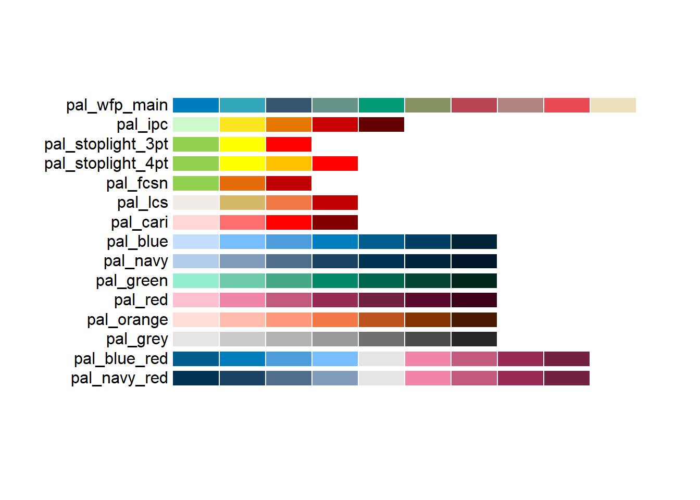
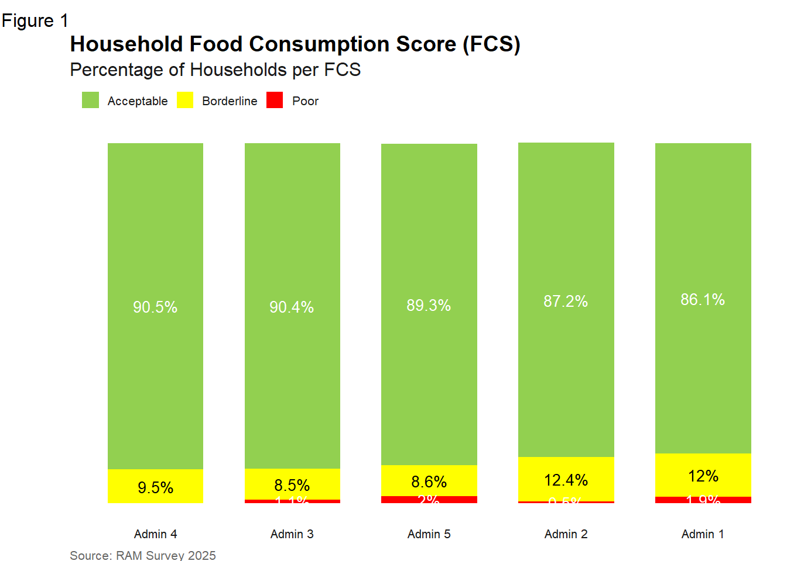
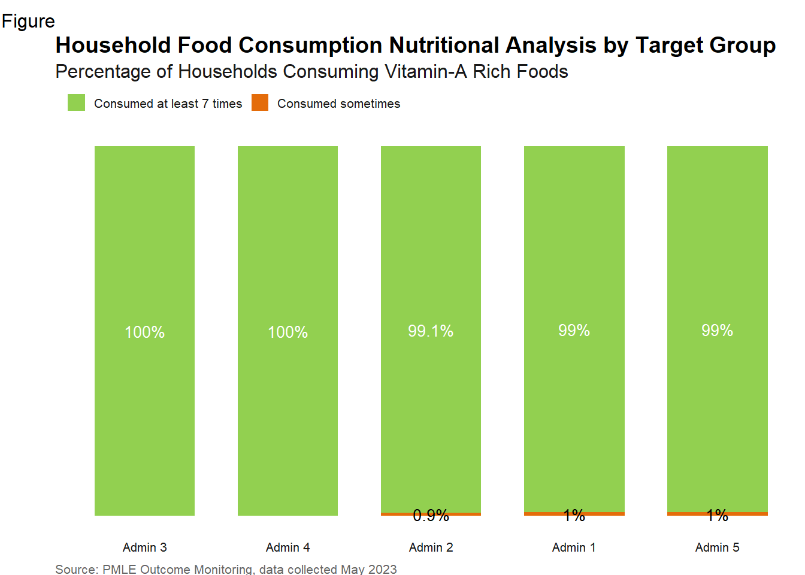
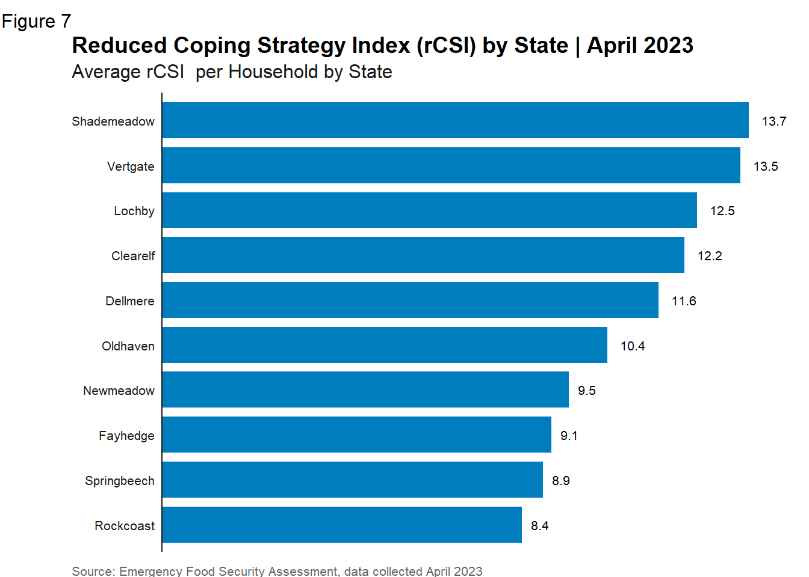
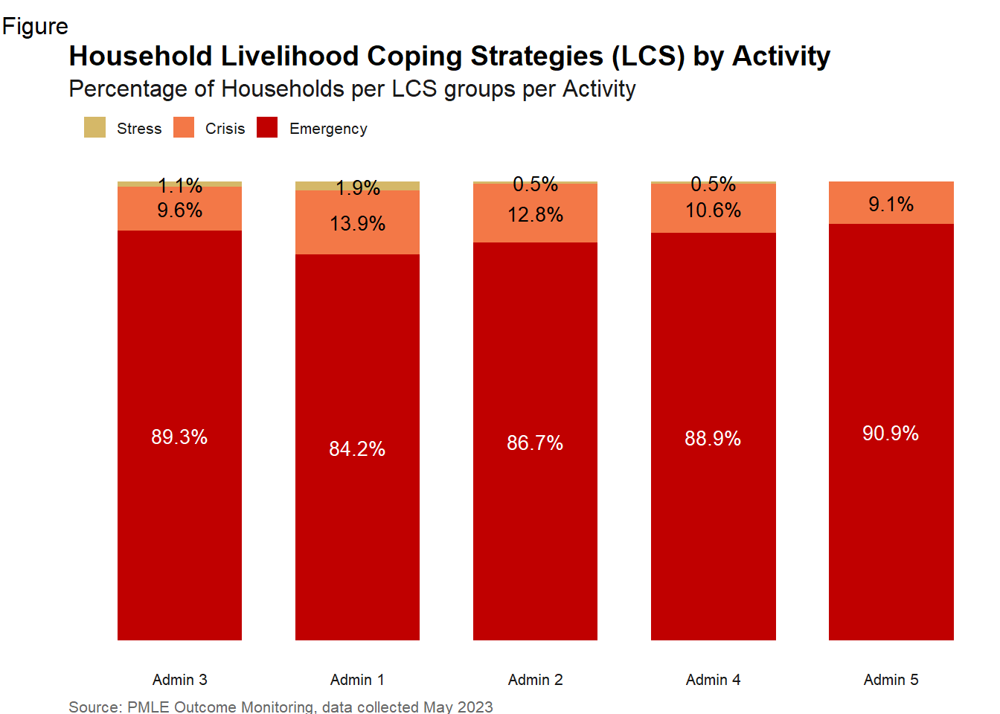
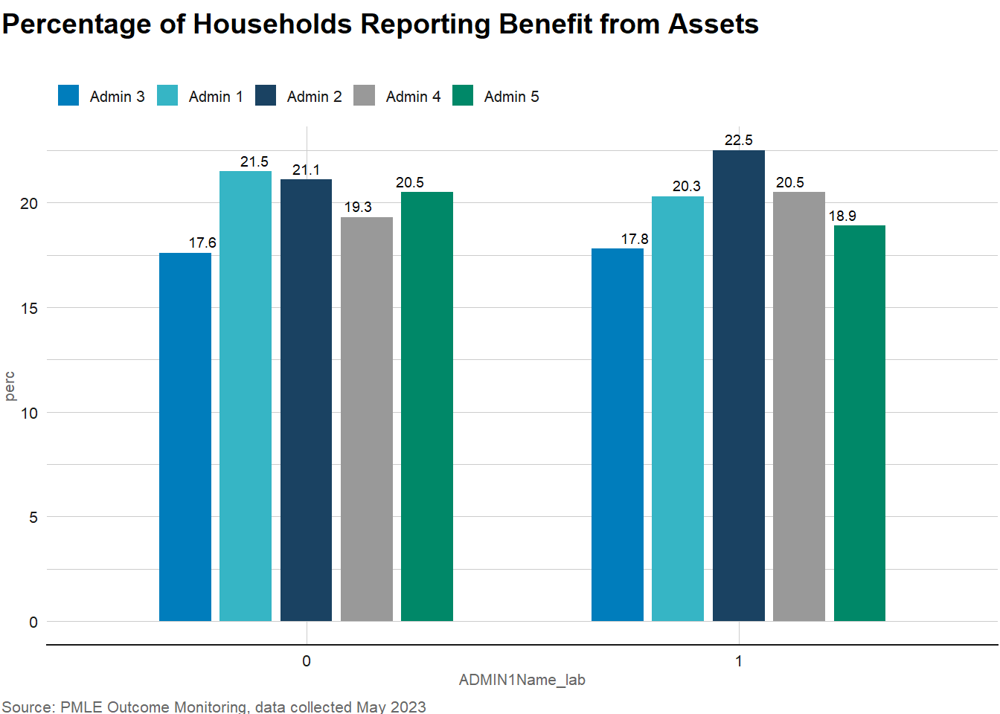

library(tidyverse)
library(ggplot2)
library(wfpthemes)
library(scales)
library(labelled)
library(readxl)
library(labelled)
library(expss)
# data(sampledataenglish, package = "wfpthemes")
indicators_data <- read_excel("input/indicators_data.xlsx")5 Data Visualization
The Data Visualization Guidelines are designed to support VAM and Monitoring Officers in building clear and effective charts, dashboards and infographics.
These guidelines recommends best practices to effectively communicate WFP work on food security to WFP staff, partners and the public. They provide appropriate tools for both data visualizations novice and experts alike, offering tips and resources to create coherent, visually appealing data visualizations with consistent colour palettes, chart elements and types to align with data visualization best practices.
display_wfp_all()
5.1 Visualizing Outcome Indicators
5.1.1 Food Consumption Score
val_lab(indicators_data$FCSCat) = num_lab("
1 Poor
2 Borderline
3 Acceptable
")
fcscat21_admin1_table_long <- indicators_data %>%
group_by(ADMIN1Name_lab = to_factor(ADMIN1Name)) %>%
count(FCSCat21_lab = as.character(FCSCat)) %>%
mutate(perc = 100 * n / sum(n)) %>%
ungroup() %>% select(-n) %>% mutate_if(is.numeric, round, 1) #create a palette of fcs based on wfpthemes palette and set ordering of values
pal_fcs <- wfp_pal("pal_stoplight_3pt", n = 3)
order_fcs <- c("Acceptable", "Borderline", "Poor")
pal_fcs <- setNames(pal_fcs, order_fcs)
#and now the graph - option1 - no y axis
fcscat21_barplot <- fcscat21_admin1_table_long %>%
ggplot() +
geom_col(
aes(x = fct_reorder2(ADMIN1Name_lab,
perc,
FCSCat21_lab,
\(x,y) sum(x*(y=="Acceptable"))),
y = perc,
fill = factor(FCSCat21_lab,level=order_fcs)),
width = 0.7) +
geom_text(aes(x = ADMIN1Name_lab,
y = perc,
color = factor(FCSCat21_lab,level=order_fcs),
label = paste0(perc, "%")),
position = position_stack(vjust = 0.5),
show.legend = FALSE,
size = 10/.pt) +
scale_color_manual(
values = c(main_white, main_black, main_white)
) +
labs(tag = "Figure 1",
title = "Household Food Consumption Score (FCS)",
subtitle = "Percentage of Households per FCS",
caption = "Source: RAM Survey 2025"
) + scale_fill_manual(values = pal_fcs) + theme_wfp(grid = FALSE, axis_text = "x", axis = F, axis_title = F) + theme(text = element_text(family = "sans"))
#
# theme(text = element_text(family = "sans"))
# plot the graph
fcscat21_barplot
5.1.2 Vitamin-A Rich Foods
indicators_data$ADMIN1Name <- haven::as_factor(indicators_data$ADMIN1Name)
#set ordering
order_fcsn <- c("Consumed at least 7 times","Consumed sometimes","Never consumed")
pal_fcsn <- setNames(pal_fcsn, order_fcsn )
# create bar-chart for FGVitACat
percFGVitA_admin1_table_long <- indicators_data %>%
group_by(ADMIN1Name_lab = to_factor(ADMIN1Name), FGVitACat_lab = as.character(FGVitACat)) %>%
summarize(count = n()) %>%
group_by(ADMIN1Name_lab) %>%
mutate(perc = round(count/sum(count) * 100, 1))`summarise()` has grouped output by 'ADMIN1Name_lab'. You can override using
the `.groups` argument.percFGVitA_barplot <- percFGVitA_admin1_table_long %>%
ggplot() +
geom_col(
aes(x = fct_reorder2(ADMIN1Name_lab,
perc,
FGVitACat_lab,
\(x,y) sum(x*(y=="Consumed at least 7 times"))),
y = perc,
fill = factor(FGVitACat_lab, level=order_fcsn)),
width = 0.7) +
geom_text(aes(x = ADMIN1Name_lab,
y = perc,
color = factor(FGVitACat_lab, level=order_fcsn),
label = paste0(perc, "%")),
position = position_stack(vjust = 0.5),
show.legend = FALSE,
size = 10/.pt) +
scale_color_manual(
values = c(main_white, main_black, main_white)
) +
labs(tag = "Figure",
title = "Household Food Consumption Nutritional Analysis by Target Group",
subtitle = "Percentage of Households Consuming Vitamin-A Rich Foods",
caption = "Source: PMLE Outcome Monitoring, data collected May 2023"
) + scale_fill_manual(values = pal_fcsn) + theme_wfp(grid = FALSE, axis_text = "x", axis = F, axis_title = F) + theme(text = element_text(family = "sans"))
percFGVitA_barplot
5.1.3 Reduced Coping Strategies
data <- sampledataenglish %>% mutate(rCSI = rCSILessQlty +
(rCSIBorrow * 2) +
rCSIMealNb +
rCSIMealSize +
(rCSIMealAdult * 3))
# Create table of rCSI by ADMIN1 (unweighted) ----------------------------------------------#
rcsi_admin1_table_long <- data %>%
mutate(ADMIN1Name_lab = to_factor(ADMIN1Name)) %>%
group_by(ADMIN1Name_lab) %>%
drop_na(rCSI) %>%
summarise(meanrCSI = round(mean(rCSI),1))rcsi_barplot <- rcsi_admin1_table_long %>% ggplot() +
geom_col(aes(
x = meanrCSI,
y = reorder(ADMIN1Name_lab, meanrCSI),
),
fill = wfp_pal(n = 1, "pal_blue"),
width = 0.8
) +
labs(
tag = "Figure 7",
title = "Reduced Coping Strategy Index (rCSI) by State | April 2023",
subtitle = "Average rCSI per Household by State",
x = "rCSI",
y = "State",
caption = "Source: Emergency Food Security Assessment, data collected April 2023"
) + geom_text(aes(x = meanrCSI,
y = ADMIN1Name_lab, label = meanrCSI),
hjust = -0.5,
size = 8 / .pt
) +
scale_x_continuous(
expand = expansion(c(0, 0.1)),
breaks = pretty_breaks(n = 7),
labels = label_number()
) + theme_wfp(grid = FALSE, axis = "y", axis_title = FALSE, axis_text = "y") + theme(text = element_text(family = "sans"))
rcsi_barplot
5.1.4 Livelihood Coping Strategies
indicators_data <- indicators_data %>%
mutate(LhCSI_Category = case_when(
Max_coping_behaviourFS == "Crisis coping strategies" ~ "Crisis",
Max_coping_behaviourFS == "Emergencies coping strategies" ~ "Emergency",
Max_coping_behaviourFS == "Stress coping strategies" ~ "Stress",
TRUE ~ "Neutral"
))
# Calculate the percentage of each level within each region area office
lcs_admin1_table_long <- indicators_data %>%
group_by(ADMIN1Name_lab = to_factor(ADMIN1Name)) %>%
count(Max_coping_behaviour_FS_lab = as.character(LhCSI_Category)) %>%
mutate(perc = 100 * n / sum(n)) %>%
ungroup() %>% select(-n) %>% mutate_if(is.numeric, round, 1)
#this will make sure proper color gets assigned to proper value no mater how table of values was created
order_lcs <- c("Neutral","Stress","Crisis","Emergency")
pal_lcs <- setNames(pal_lcs, order_lcs)
#and now the graph - option1 - no y axis
lcs_barplot <- lcs_admin1_table_long %>%
ggplot() +
geom_col(
aes(x = fct_reorder2(ADMIN1Name_lab,
perc,
Max_coping_behaviour_FS_lab,
\(x,y) sum(x*(y=="Neutral"))),
y = perc,
fill = factor(Max_coping_behaviour_FS_lab,level=order_lcs)),
width = 0.7) +
geom_text(aes(x = ADMIN1Name_lab,
y = perc,
color = factor(Max_coping_behaviour_FS_lab,level=order_lcs),
label = paste0(perc, "%")),
position = position_stack(vjust = 0.5),
show.legend = FALSE,
size = 10/.pt) +
scale_color_manual(
values = c(main_black, main_black, main_white, main_white)
) +
labs(tag = "Figure",
title = "Household Livelihood Coping Strategies (LCS) by Activity",
subtitle = "Percentage of Households per LCS groups per Activity",
caption = "Source: PMLE Outcome Monitoring, data collected May 2023"
) + scale_fill_manual(values = pal_lcs) + theme_wfp(grid = FALSE, axis_text = "x", axis = F, axis_title = F) +theme(text = element_text(family = "sans"))
lcs_barplot
5.2 Chart Types
5.2.1 Bar/Comumn Chart
5.2.2 Grouped Bar Chart
abi_summary <- indicators_data %>%
group_by(ADMIN1Name_lab = labelled::to_factor(HHHSex)) %>%
count(HHSNoFood_lab = labelled::to_factor(ADMIN1Name)) %>%
mutate(perc = 100 * n / sum(n)) %>%
ungroup() %>% select(-n) %>% mutate_if(is.numeric, round, 1)
abi_plot <- ggplot(abi_summary) +geom_bar(
aes(x = ADMIN1Name_lab, y = perc, fill = HHSNoFood_lab, group = HHSNoFood_lab),
stat='identity', position=position_dodge(.7), width = 0.6,
) +
geom_text(
aes(x = ADMIN1Name_lab, y = perc, label = perc, group = HHSNoFood_lab),
position = position_dodge(width = 0.6),
vjust = -0.5, size = 2.5
)+
scale_fill_wfp_b(palette = "pal_wfp_main") +
labs(
title = "Percentage of Households Reporting Benefit from Assets",
subtitle = "",
caption = "Source: PMLE Outcome Monitoring, data collected May 2023"
) + theme_wfp() +theme(text = element_text(family = "sans"))
abi_plot